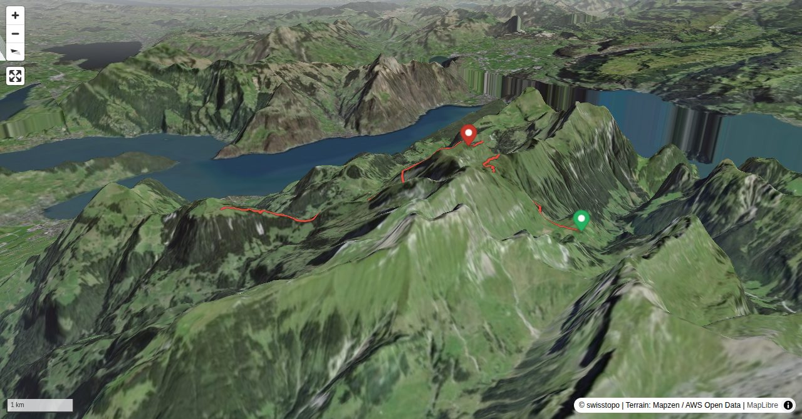

The communes Isenthal (UR), Emmetten and Beckenried (NW) share one of the more rewarding hiking summits around Lake of Lucerne: Schwalmis. To Nidwalden the mountain drops sharply, with rocky slabs and rubble; on the Uri side, however, steep grassy slopes characterise its appearance. The summit is well-known and made accessible by a mountain trail, but again, we try to find alternatives. A hike on steep slopes in early summer with myriads of blooming flowers is highly recommended.
Informationen zur Seilbahn St. Jakob – Gitschenen: +41 878 11 33 oderskiliftgitschenen.ch
Quick Facts
| Summit elevation | 2241 m |
|---|---|
| Difficulty | SAC T4 Alpine hiking with exposure, rougher terrain, and sections that are not suitable for beginners. Guide |
| Trailhead | Gitschenen, Bergstation |
| Region | Northern Alps |
| Canton | Nidwalden |
| Distance | 8.6 km (out-and-back) |
| Total ascent | ~872 m |
| Elevation range | 1538-2241 m |
| Route sources | SAC Route Portal |
Photos


Planning
i
i
sac_scale (precise T1–T6) with
swissTLM3D Wanderwegart
fallback where OSM is silent (coarser T2/T3 and T4+ buckets).
Coverage: OSM 72.7% · swisstopo 2.9% · unknown 22.3%.Elevations computed from the inlined GPX track (SwissTopo height API).
Loading forecast…
Start: Gitschenen, Bergstation (1538 m)
End: Ober Musenalp (1755 m)
Cable car to Gitschenen, Bergstation.
3D Terrain View

Route Details
From Gitschenen across Schwalmis to Musenalp
- Gitschenen – Schwalmis 2 h 15 min. Schwalmis – Ober Musenalp 2 h.
Terrain & safety
On the ascent from Gitschenen to Schwalmis there are steep pastures, some schrofen and a slightly exposed ridge (T4). On the other hand, the orientation is easy. The descent via Aren also offers steep pastures, which are not recommended in wet weather (also T4). The segment Bärenfallen–Unter Musenalp is well equipped and hardly more difficult than T2+ despite rocky passages. The tour can be undertaken in one afternoon, provided that you do not miss the departure of the last gondola from Musenalp.
Source: SAC Route Portal
Field Reference
| Trailhead | Gitschenen, Bergstation | 46.90030, 8.50030 |
|---|---|---|
| Summit | Schwalmis (2241 m) | 46.91854, 8.49351 |
Coordinates are WGS84 decimal degrees (lat, lon). Emergency: 112 (general) or 1414 (Rega air rescue). Page URL: